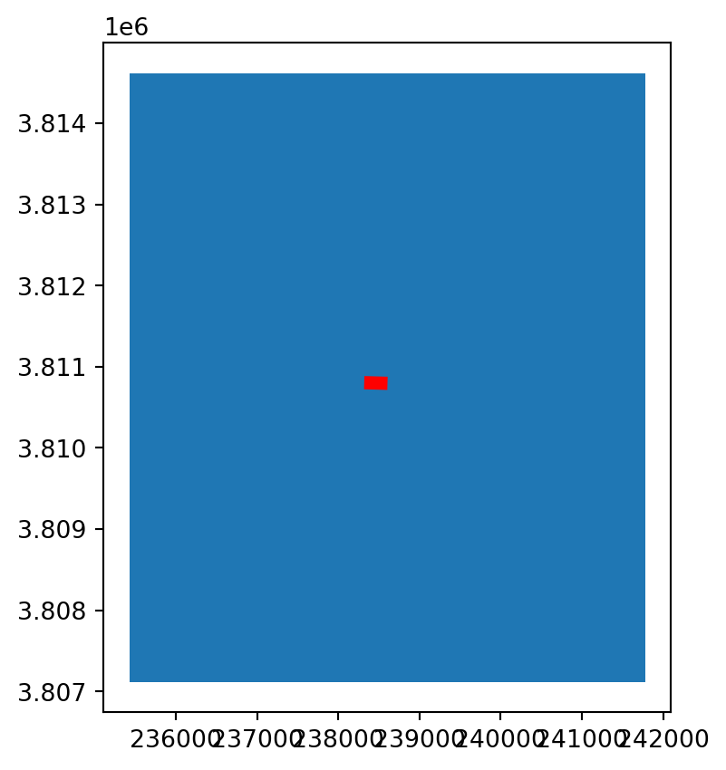
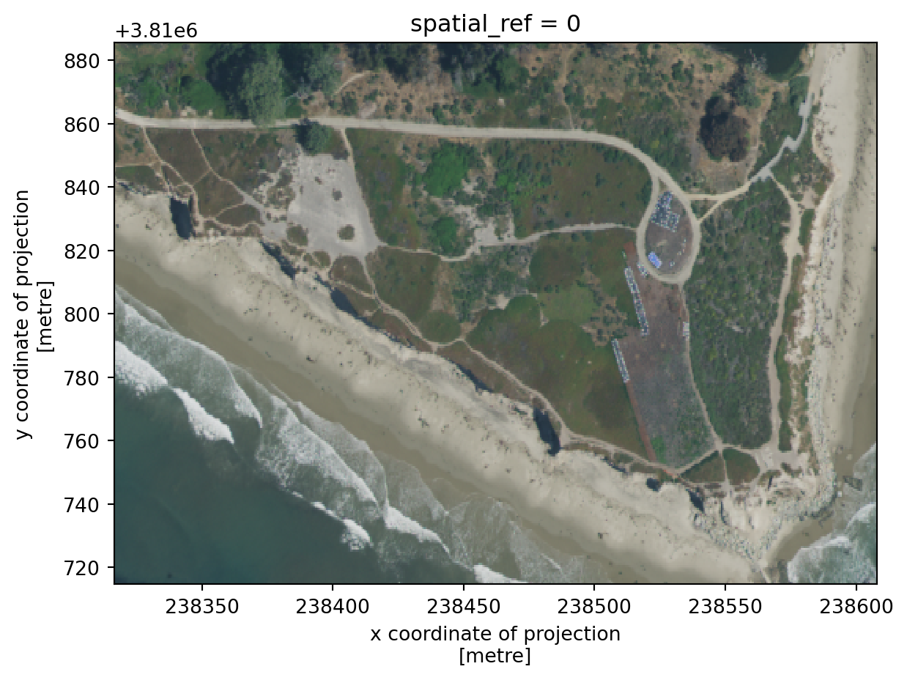
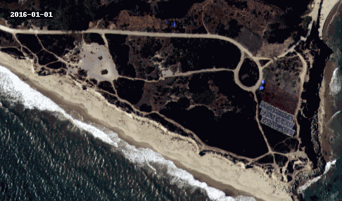

import pandas as pd
import geopandas as gpd
import matplotlib.pyplot as plt
import xarray as xr
import rioxarray as rioxr
from shapely.geometry import box
import pystac_client
import planetary_computer
from geogif import gif # to create gif27 Make a GIF
In this lesson we will use NAIP data to create a GIF showing vegetation change over Campus Point at UCSB.
UCSB’s Cheadle Center for Biodiveristy and Ecologicla Restoration (CCBER) manages multiple ecological restoration sites around the UCSB campus to protect and enhance native biodiveristy and preserve ecological function within urbanized areas. Campus Point is one of the areas managed by CCBER and has undergone multiple active restoration projects since 2005. In particular, Campus Point is greatly covered by iceplant (Carpobrotus edulis), an inviasive succulent that competes with native plants by forming thick mats that cover large areas. In the last few years CCBER has removed iceplant in Campus Point to replace it with native vegetation.
We will create a gif using NAIP imagery from 2016, 2018, and 2020 showing the vegetation change in this area.
First, let’s import the necessary libraries and functions. To create the GIF we’ll be using the geogif library, which makes it simple to create gifs from xarray.DataArrays.
27.1 Data search
To search for the NAIP data in the Microsoft Planetary Computer Catalog we will use a list of coordinates defining a bounding box around campus point. We will also limit our search for items since 2016, when NAIP data resolution increased from 1m to 0.6m per pixel.
# open catalog
catalog = pystac_client.Client.open(
"https://planetarycomputer.microsoft.com/api/stac/v1",
modifier=planetary_computer.sign_inplace,
)
# coords defining bbox around campus point
bbox = [-119.84682486219316, 34.404860394049024, -119.84370917948988, 34.40632764289684]
# search
search = catalog.search(
collections=["naip"],
bbox=bbox,
datetime='2016/2023'
)
# get items from search
items = search.item_collection()
print(f'There are {len(items)} items in the search.')There are 3 items in the search.27.2 Prepare single raster
The NAIP data is available at the item’s 'image' asset:
item = items[0]
sb = rioxr.open_rasterio(item.assets['image'].href)
sb<xarray.DataArray (band: 4, y: 12500, x: 10580)>
[529000000 values with dtype=uint8]
Coordinates:
* band (band) int64 1 2 3 4
* x (x) float64 2.354e+05 2.354e+05 ... 2.418e+05 2.418e+05
* y (y) float64 3.815e+06 3.815e+06 ... 3.807e+06 3.807e+06
spatial_ref int64 0
Attributes:
AREA_OR_POINT: Area
TIFFTAG_IMAGEDESCRIPTION: OrthoVista
TIFFTAG_RESOLUTIONUNIT: 1 (unitless)
TIFFTAG_SOFTWARE: Trimble Germany GmbH
TIFFTAG_XRESOLUTION: 1
TIFFTAG_YRESOLUTION: 1
_FillValue: 0
scale_factor: 1.0
add_offset: 0.0This rater is way bigger than our area of interest. To verify this and then clip the raster, let’s make a gpd.GeoDataFrame from the bbox coordinates:
# bounding box as geodataframe
box_df = gpd.GeoDataFrame(geometry=[box(*bbox)],
crs='epsg:4326') # plot bounding box and raster extents
fig, ax = plt.subplots()
gpd.GeoDataFrame(geometry=[box(*sb.rio.bounds())],
crs=sb.rio.crs).plot(ax=ax)
box_df.to_crs(sb.rio.crs).plot(ax=ax, color='red')<Axes: >
# clip raster to bounding box
sb = sb.rio.clip_box(*box_df.to_crs(sb.rio.crs).total_bounds)NAIP data has four bands, Red, Green, Blue, and Near-Infrared. To make it easier to plot RGB images, let’s select only the first three bands.
# select red, green, blue bands and plot true color image.
sb = sb.sel(band=[1,2,3])
sb.plot.imshow()<matplotlib.image.AxesImage at 0x153634610>
27.3 Stack rasters
Our goal is to use the gif function to create a gif with the three NAIP images over campus point.
The gif documentation indicates that to do so we will need to put our images/rasters in a single xarray.DataArray with dimensions (time, band, y, x). A single raster has the following dimensions:
print('dimensions: ', sb.dims)
print('shape: ', sb.shape)dimensions: ('band', 'y', 'x')
shape: (3, 285, 486)To create a single xarray.DataArray with a time dimensions we will stack the three rasters we obtained in our search. We use a for loop to repeat the previous steps for each item in the search (access the item’s image asset, clip, and select bands) and store each processed raster in a list rasters:
# create a list with rasters
rasters = []
for item in items:
sb = rioxr.open_rasterio(item.assets['image'].href)
sb = sb.rio.clip_box(*box_df.to_crs(sb.rio.crs).total_bounds)
sb = sb.sel(band=[1,2,3])
rasters.append(sb)Next we use the xarray.concat() function to concatenate these rasters along a new dimensions we will call time:
# concatenate rasters into single xarray.DataArray
stack = xr.concat(rasters, dim='time')
stack<xarray.DataArray (time: 3, band: 3, y: 285, x: 486)>
array([[[[108, 99, 87, ..., 134, 145, 150],
[110, 109, 101, ..., 123, 142, 150],
[ 99, 94, 94, ..., 136, 142, 152],
...,
[ 37, 37, 37, ..., 150, 130, 158],
[ 36, 38, 37, ..., 158, 135, 137],
[ 37, 38, 38, ..., 151, 145, 116]],
[[113, 106, 94, ..., 136, 142, 147],
[113, 109, 107, ..., 128, 141, 148],
[109, 104, 105, ..., 136, 140, 148],
...,
[ 58, 59, 60, ..., 161, 153, 167],
[ 56, 58, 59, ..., 173, 156, 158],
[ 58, 58, 59, ..., 166, 157, 137]],
[[ 88, 88, 85, ..., 120, 128, 131],
[ 87, 86, 84, ..., 113, 127, 133],
[ 85, 83, 83, ..., 120, 126, 133],
...,
...
...,
[ 45, 46, 39, ..., 61, 64, 59],
[ 57, 64, 36, ..., 63, 55, 53],
[ 53, 57, 40, ..., 55, 50, 46]],
[[ 48, 47, 49, ..., 88, 92, 120],
[ 54, 49, 49, ..., 85, 112, 114],
[ 58, 53, 51, ..., 82, 112, 100],
...,
[ 58, 58, 57, ..., 70, 76, 74],
[ 73, 70, 53, ..., 76, 70, 66],
[ 65, 69, 52, ..., 68, 59, 60]],
[[ 52, 52, 53, ..., 85, 99, 119],
[ 54, 51, 55, ..., 81, 109, 108],
[ 57, 52, 53, ..., 85, 106, 93],
...,
[ 70, 68, 62, ..., 79, 79, 76],
[ 78, 75, 61, ..., 81, 72, 70],
[ 71, 77, 63, ..., 74, 66, 65]]]], dtype=uint8)
Coordinates:
* band (band) int64 1 2 3
* x (x) float64 2.383e+05 2.383e+05 ... 2.386e+05 2.386e+05
* y (y) float64 3.811e+06 3.811e+06 ... 3.811e+06 3.811e+06
spatial_ref int64 0
Dimensions without coordinates: time
Attributes:
AREA_OR_POINT: Area
TIFFTAG_IMAGEDESCRIPTION: OrthoVista
TIFFTAG_RESOLUTIONUNIT: 1 (unitless)
TIFFTAG_SOFTWARE: Trimble Germany GmbH
TIFFTAG_XRESOLUTION: 1
TIFFTAG_YRESOLUTION: 1
scale_factor: 1.0
add_offset: 0.0
_FillValue: 0Notice our new dimension time does not have any coordinates associated to it. To add coordinates to this dimensions we use the assign_coords() method for xarray.DataArray.
It would be reasonable to use the year of collection of each raster (as a timestamp) as its coordinate on the time dimension. We can see this year in the item’s properties:
# year of collection of an item
item = items[0]
item.properties['naip:year']'2020'# convert strings to datetime
pd.to_datetime(item.properties['naip:year'])Timestamp('2020-01-01 00:00:00')To get this timestamps for each year we can create a list using list comprehension:
times = [pd.to_datetime(item.properties['naip:year']) for item in items]
times[Timestamp('2020-01-01 00:00:00'),
Timestamp('2018-01-01 00:00:00'),
Timestamp('2016-01-01 00:00:00')]And finally we assign these times as the coordinates and sort by the vlaues of time dimension:
stack = stack.assign_coords(time=times).sortby("time")
stack<xarray.DataArray (time: 3, band: 3, y: 285, x: 486)>
array([[[[ 54, 49, 52, ..., 96, 96, 122],
[ 59, 51, 55, ..., 90, 119, 112],
[ 65, 55, 55, ..., 91, 114, 98],
...,
[ 45, 46, 39, ..., 61, 64, 59],
[ 57, 64, 36, ..., 63, 55, 53],
[ 53, 57, 40, ..., 55, 50, 46]],
[[ 48, 47, 49, ..., 88, 92, 120],
[ 54, 49, 49, ..., 85, 112, 114],
[ 58, 53, 51, ..., 82, 112, 100],
...,
[ 58, 58, 57, ..., 70, 76, 74],
[ 73, 70, 53, ..., 76, 70, 66],
[ 65, 69, 52, ..., 68, 59, 60]],
[[ 52, 52, 53, ..., 85, 99, 119],
[ 54, 51, 55, ..., 81, 109, 108],
[ 57, 52, 53, ..., 85, 106, 93],
...,
...
...,
[ 37, 37, 37, ..., 150, 130, 158],
[ 36, 38, 37, ..., 158, 135, 137],
[ 37, 38, 38, ..., 151, 145, 116]],
[[113, 106, 94, ..., 136, 142, 147],
[113, 109, 107, ..., 128, 141, 148],
[109, 104, 105, ..., 136, 140, 148],
...,
[ 58, 59, 60, ..., 161, 153, 167],
[ 56, 58, 59, ..., 173, 156, 158],
[ 58, 58, 59, ..., 166, 157, 137]],
[[ 88, 88, 85, ..., 120, 128, 131],
[ 87, 86, 84, ..., 113, 127, 133],
[ 85, 83, 83, ..., 120, 126, 133],
...,
[ 69, 69, 70, ..., 155, 148, 161],
[ 67, 69, 70, ..., 169, 151, 152],
[ 69, 70, 68, ..., 166, 156, 135]]]], dtype=uint8)
Coordinates:
* band (band) int64 1 2 3
* x (x) float64 2.383e+05 2.383e+05 ... 2.386e+05 2.386e+05
* y (y) float64 3.811e+06 3.811e+06 ... 3.811e+06 3.811e+06
spatial_ref int64 0
* time (time) datetime64[ns] 2016-01-01 2018-01-01 2020-01-01
Attributes:
AREA_OR_POINT: Area
TIFFTAG_IMAGEDESCRIPTION: OrthoVista
TIFFTAG_RESOLUTIONUNIT: 1 (unitless)
TIFFTAG_SOFTWARE: Trimble Germany GmbH
TIFFTAG_XRESOLUTION: 1
TIFFTAG_YRESOLUTION: 1
scale_factor: 1.0
add_offset: 0.0
_FillValue: 027.4 GIF
Getting the rasters in the right format is the trickiest part of creating the GIF! Can you see the resotration areas?
# create gif
# fps = frames per second
# adding to="campus_point.gif" will save GIF
gif(stack, fps = 0.5)